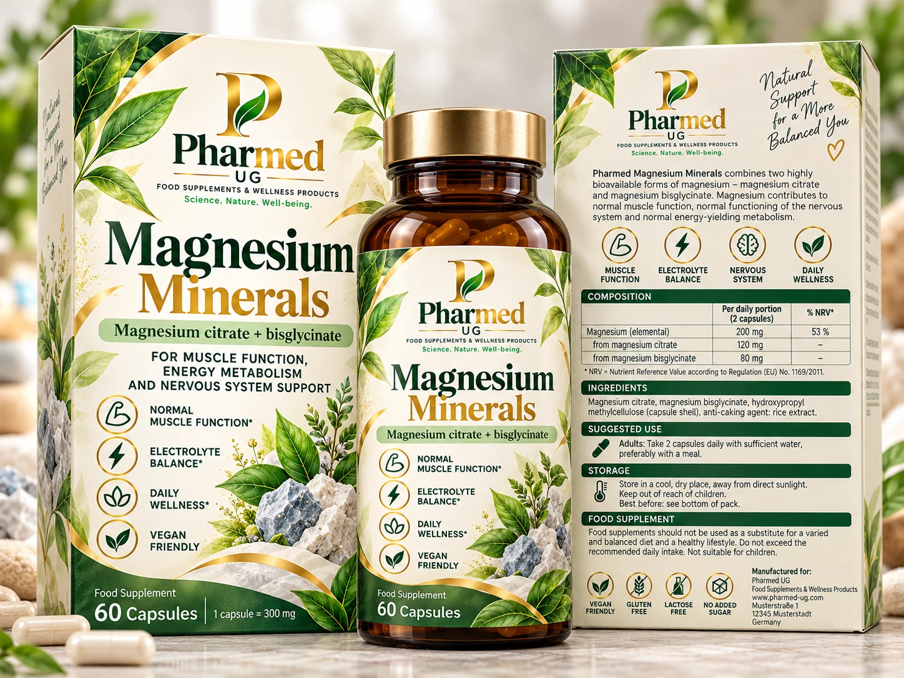

Prototype formulation · NOT FOR SALE
Magnesium Minerals
Magnesium Mineral-Komplex · مركب معادن المغنيسيوم
Citrate and bisglycinate as sources of 200 mg elemental magnesium in two capsules. Actual salt input weights depend on certified raw-material assay. HPMC capsule shell and, if needed, declared processing aids.
2 capsules (proposed daily portion)
Proposed materials or research targets
| Ingredient / attribute | Prototype amount / status | Evidence requirement |
|---|---|---|
| Elemental magnesium | 200 mg | 53% NRV |
| Magnesium from citrate | 100 mg Mg | Target only; supplier assay required |
| Magnesium from bisglycinate | 100 mg Mg | Target only; supplier assay required |
Safety, classification & artwork caution
BfR recommends at most 250 mg supplemental magnesium/day, divided into two or more intakes; adult prototype only. Renal impairment, other magnesium products and gastrointestinal tolerance need evaluation. Artwork capsule mass and individual magnesium-source amounts are not certified; dosing remains a proposal. These design images may contain incorrect numerical values, claims or fictitious address/barcode. They must not be printed or used for retail labelling.